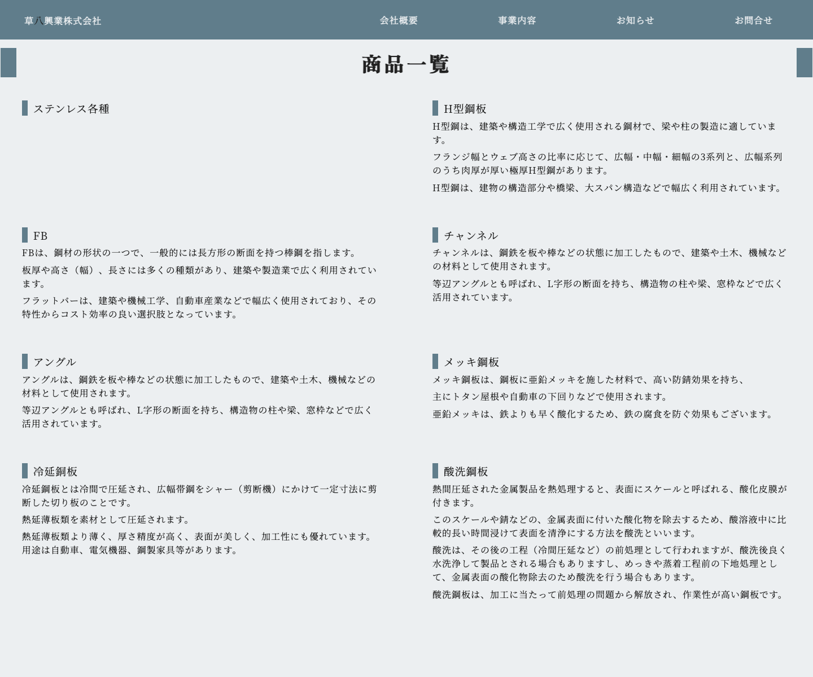

この実績は Web アプリ開発とは少し違い、企業サイトとして必要な情報をどう整理し、 どう更新しやすい形にするかが中心でした。見た目だけを整えるのではなく、 会社案内、事業紹介、商品情報、お知らせ、問い合わせといった基本導線を WordPress 上で ひとつの運用フローにまとめています。
最初に整えたのは、会社の全体像が伝わる情報の並びでした。
企業サイトでは、訪問した人が最初に知りたいのは「何をしている会社か」「どんな商品や設備があるか」 「どこに問い合わせればよいか」です。そこでトップページでは、ABOUT、事業内容、商品一覧、 NEWS、CONTACT、ACCESS までを順番に並べ、初見でも迷いにくい構成にしました。
派手な演出よりも、工場や製品写真、落ち着いたブルーグレーの配色、余白の取り方によって、 製造業らしい誠実さと落ち着きを前に出しています。
- トップで会社概要から問い合わせまでを一続きの導線として整理
- 事業内容、商品一覧、設備一覧などを固定ページで明確に分離
- 会社の空気感が伝わる写真と配色で、信頼感を優先した見せ方に調整
更新しやすさのために、WordPress の使い方もシンプルにまとめました。
実装は WordPress のカスタムテーマで行い、メニュー登録、アイキャッチ画像、一覧と詳細の投稿表示、 お問い合わせフォームまでをテーマ内で組んでいます。投稿まわりは複雑にしすぎず、 お知らせと商品情報をカテゴリで分けて扱う形にし、日々の更新負荷が上がりすぎないようにしています。
固定ページ
会社概要、事業内容、設備、問い合わせなど、企業サイトの基本情報を分かりやすく整理しました。
投稿運用
お知らせや商品一覧は投稿とカテゴリを使って一覧化し、公開後も追加しやすい流れにしています。
問い合わせ導線
Contact Form 7 を使った問い合わせページと、トップからの明確な導線を用意しています。

小さな操作も、企業サイトとして自然に見える範囲で整えました。
例えば、スマートフォン向けのドロワーメニュー、スクロールに合わせた画像や見出しの表示、 アクセス情報の地図切り替えなど、必要な範囲の動きを JavaScript で追加しています。 見せ方を派手にするためではなく、情報が読まれやすく、必要な場所にたどり着きやすくするための調整です。
企業サイトでは、複雑な機能よりも「必要な情報が迷わず届くこと」と 「公開後も無理なく更新できること」の両立が大切でした。
WordPress / PHP / カスタムテーマ / Contact Form 7 / WP_Query / jQuery
企業サイト / WordPress 導入 / 更新しやすい情報設計 / お知らせ運用 / 問い合わせ導線